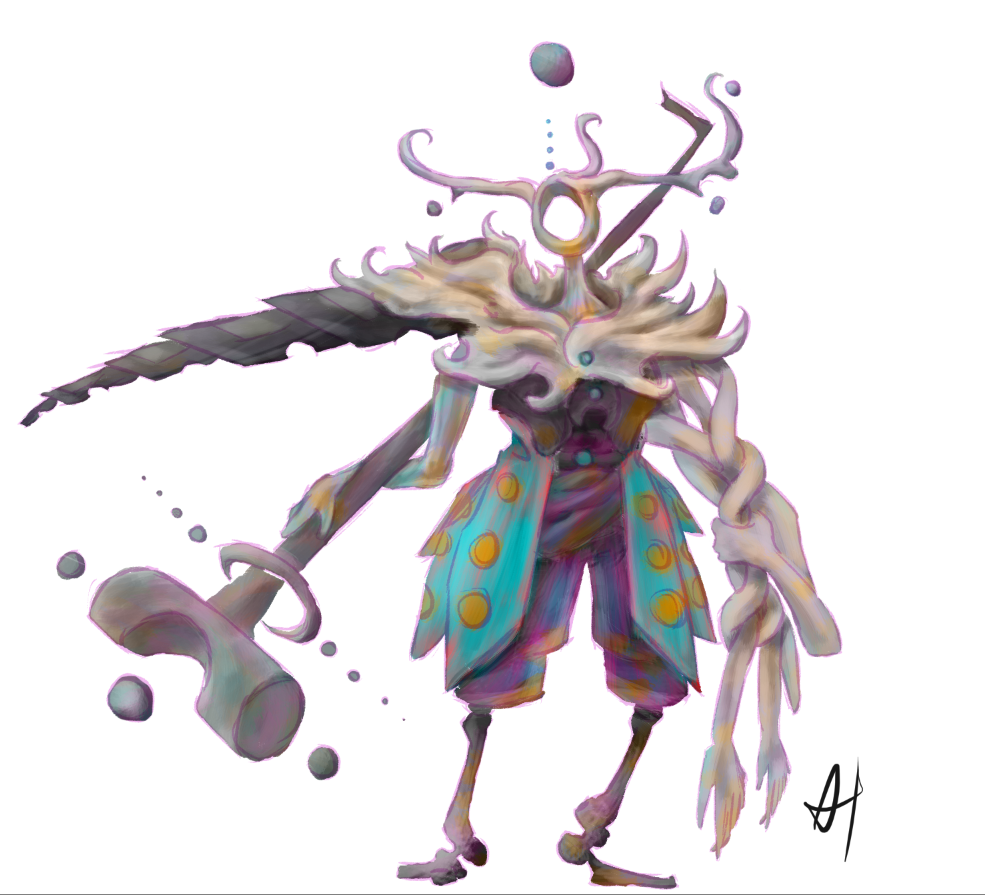

Puppet Knight

Long-term personal VR project involving multiple experimental packages. Spans from concepting to design to Unity components to custom programming.
Life is an immersive medium. It is not an uncommon belief among philosophers and religionists that the physical world is just an abstraction or an illusion, and that people are tricked into thinking that it is real.
VR is similarly immersive. It is easy to forget, for a moment, that you are not really in that space.
When I started Puppet Knight back in 2020, I wanted to explore this parallel. What does it mean to be immersed? how can we fight that immersion to create a sort of 'dissociation' in a VR environment? I have, at times in my life, experienced derealization, and wanted to explore it in an artistic medium.
I came to the conclusion that a good method for this expression would be a 3rd-person game. How does a 3rd-person game work in VR? I could go with a classic implementation, a la 'Trover Saves the Universe' but I was afraid that that would come too naturally. Routine, I felt, did not lead to this disconnect between the person and the personage that I wanted. I came to think about puppets, and how they are representative of our aims (they are used in puppet shows as actors, for example) but are not us. Rather, we have to move them through another medium (strings, hand guestures, etc). This seemed fitting.
I was going to make a game about puppets.
The first step for a project like this was creating the assets that would be used in the final game. I spent a lot of time concepting the various appearances of the puppet, as well as NPCs to interact with. This stage was pretty cut-and-dry, and I've posted some of my favorite pieces as 'chapter headers' of sorts for the early stages of development.
After the concept art was made, I jumped on 3D modeling in Blender. This has a very steep learning curve for me, and I am still not happy with my level of proficiency in this area. After I had the models rigged, I imported them into Unity to begin what would become the most involved project that I had ever worked on at the time of this writing.

When I began this project, I had the idea to make a game where you move the character by physically pushing them around in VR. I did not realize, at this stage of my game-making career, how ridiculously hard that is to do.
My first forrays into this field were with Unity's ragdolls. My idea was to attach spring joint to a physics-enabled ragdoll in order to make a 'punching bag' of sorts. This lead to an interesting effect, but not one that I wanted. The animations lacked intention.
Similar low-effort efforts were similarly ineffective. I had to face the truth: I had to learn what I was doing.
In the course of my journey, I learned about cross-products, raycasts, inverse kinematics, shaders (incidental), Unity physics, a little about quaternions, and a lot about programming in the Unity environment. The irony was not lost on me that, in the course of making a game about exploring an unfamiliar environment, I was doing just that.
In the end, I used Unity's animation-rigging package (which was experiemental when I began), a configurable joint, and a bunch of code I wrote to manage the movement of the puppet. My initial goal was finally complete: A player could push a puppet in order to move themselves around a VR environment.

This project has been very involved. I tried to do everything myself, and learned a lot about all sorts of parts of the game-making process. Taking a project from one end to the other, accepting my mistakes, and learning along the way has been an eye opening experience.
I want to continue development on puppet knight. In it's current state, it is obviously unfinished. I have a lot of ideas for where it could go from here, and will make good on as many as I can over the years. However, I think that I'll forgo my requirement that I do everything myself. Although I learned a lot in fields like 3D modeling, I also learned that there are areas that my projects could benefit from collaborating with others.
Well, that's what I wanted to say about this topic. If you are curious about this project (or most anything else) feel free to reach out! Otherwise, thanks for listening.